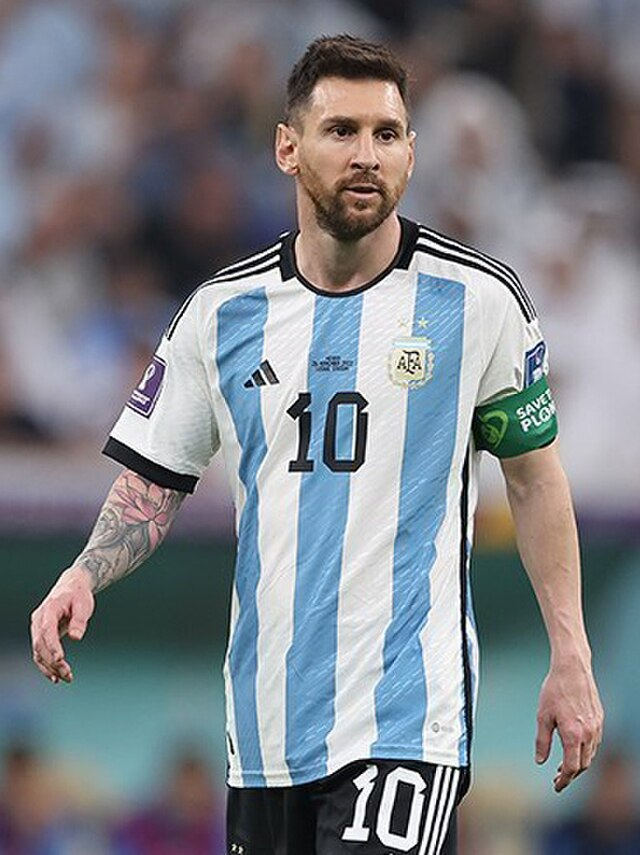
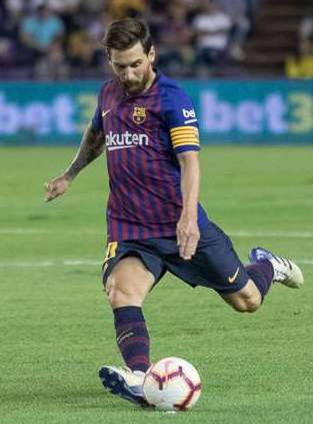

Lionel Messi was born in Rosario, Argentina. When he was just 11 years old he was diagnosed with GHD (growth hormone deficiency). When he was diagnosed he was only 1.27 meters tall. This leand to his parents to seek medical help the treatment was later covered by FC Barcelona. then when he was 13 he and his family moved to Barcelona, Spain that he were he begain playing for FC Barcelona's youth teams
the thing that made Messi want to play was mostly his grandmother. His grandma had encouraged him to play football from a young age even when he was feeling bad about his hight. Now when ever he scores a goal he points his hands to the sky to honer grandparents
Messi has won a record breaking 8 Ballon d'Or awards this awards are the hardest to get with them requiring a lot of work and dedication to the game. He also won the 2022 FIFA world cup for Argentina. He has also scored 858 goals in his career and he has done many more great things.
 Home